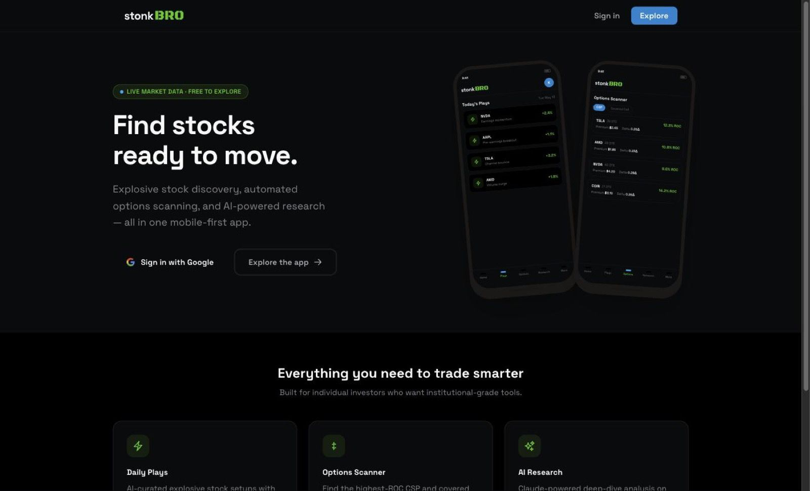
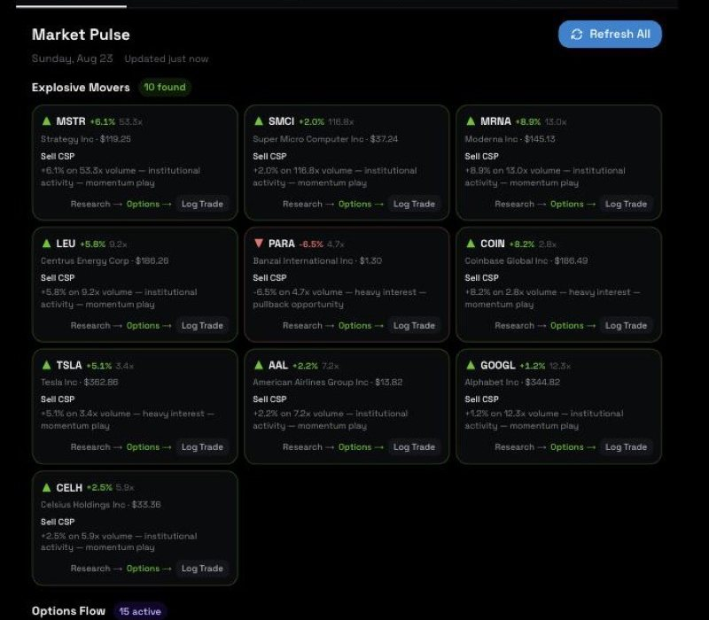
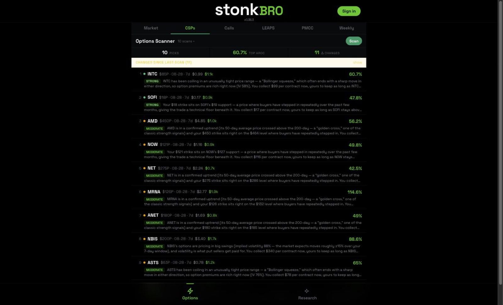

It reads live option chains for cash-secured puts, covered calls, LEAPS and PMCC pairs, ranks what it finds, and tracks the positions you open. Built to replace checking chains one ticker at a time.
Selling premium is mostly checking the same things again
Which of my tickers moved today. What the chain looks like at the strikes I'd actually sell. Whether the premium is worth the collateral it ties up. Done by hand across twenty symbols that is an evening's work, and the quotes are stale by the time you finish.
Stonk Bro takes a watchlist and does the pass for you. It pulls live quotes and full option chains from Yahoo Finance, scores stocks on volume ratio, momentum, moving-average position and 52-week range, and ranks option setups by annualised return on capital. Claude writes the reasoning next to each pick.
Tour
Three screens you'll live in
stonkbro.vercel.app

Signed out
Look before you sign in
Sign in with Google, or take the Explore route and look around first. The three things it does are stated on the front door: daily plays, options scanner, AI research. The layout is built phone-first.
Live market data, free to explore
Google sign-in through Supabase Auth
stonkbro.vercel.app/discovery

Discovery
Market Pulse, ranked
Explosive Movers scores your watchlist on volume ratio, momentum, moving-average position and where price sits in its 52-week range. Each card carries the move, the volume multiple and a one-line reason for the ranking.
Research, Options and Log Trade on every card
Options Flow with call/put counts per symbol
stonkbro.vercel.app/options

Options scanner
Chains ranked by return
The CSP tab reads real option chains and ranks setups by annualised return on capital, putting strike, expiry, days to run, premium and collateral on one line. A plain-English note under each row says why it ranked.
Tabs for CSPs, calls, LEAPS, PMCC and weeklies
Flags what changed since the previous scan
How it works
Watchlist in, positions tracked
The order a real user meets it: build the list, scan the chains, log what you actually traded, then let the alerts find you.
01
Build a watchlist
Sign in with Google and add tickers. Your default watchlist is what Discovery scores and what the scanner runs against.
02
Scan the chains
Pick a tab — CSPs, calls, LEAPS, PMCC, weeklies — and it pulls live chains from Yahoo Finance and ranks the setups it finds.
03
Log what you traded
Place the order with your own broker, then log the position here, leg by leg: strike, expiry, entry price, quantity.
04
Let the signals find you
A cron checks open positions three times a day on market days and emails a briefing when something is worth closing or rolling.
Features
What's actually in it
Discovery scoring
Ranks your watchlist on volume ratio, momentum, moving-average position and 52-week range, from live Yahoo Finance quotes.
Options scanner
Real chains for cash-secured puts, covered calls, LEAPS, PMCC and weeklies, sorted by annualised return on capital.
PMCC grading
Pairs a LEAPS call with a short call, computes capital required and monthly premium, and grades the setup A, B or C.
Claude research
Reads up to twenty symbols in one run and writes trade suggestions with strike, expiry and the reasoning behind each.
Position tracking
Multi-leg positions through a full active, rolled, closed lifecycle. Wheel cycles and PMCCs both track leg by leg.
Trade signals
Close at 50% profit, roll at 21 days to expiry or a breached strike, warn within 3% of strike. Sorted by urgency.
Portfolio P&L
Live profit and loss from your logged positions, or from a brokerage account linked through SnapTrade.
Learn, offline
Coursework on Greeks, technicals and defensive rules, with case studies built from committed chain snapshots. Runs with no connection.
Trading Desk
Decision journal grades every recommendation against realized P&L. Debate Verdict emits ratings (BUY/HOLD/SELL) with AI-narrated theses. Risk Desk gates candidates by portfolio constraints. Market Regime guides scanner sensitivity.
Privacy lock
A PIN masks every dollar figure app-wide before you hand someone your phone. Market data and the scanner stay usable.
Built with
The stack, and where the data lives
Next.js 16
React 19
TypeScript 5
Tailwind CSS 4
Supabase
Anthropic SDK
Resend
SnapTrade
Vercel
Hosted on Vercel. Positions, watchlists and settings live in Supabase Postgres behind row-level security, so a row only reads back to the account that wrote it. Quotes and chains come from Yahoo Finance. The research calls run on my own Anthropic key, which is the real limit on how many people can use this.
FAQ
Reasonable questions
Is this financial advice?
No. It is a personal project I built for my own trades. Nothing in it is a recommendation to buy or sell anything, and the figures in these screenshots are one scan on one day, not results to expect. Options trading can lose money.
Is it free?
There is nothing to pay. The research runs on my own Anthropic API key, so heavy use costs me rather than you — which is why it stays a small, personal deployment.
Do I need an account?
You can explore market data without one. Watchlists, positions and saved research need a Google sign-in through Supabase Auth, because they write rows that belong to you.
Where does my data go?
Supabase Postgres with row-level security. Quotes and option chains come from Yahoo Finance, research prompts go to Anthropic's API, and alert emails go through Resend. Vercel Analytics is the only measurement on the app.
Does it work on a phone?
It is built mobile-first and installs as a PWA. A service worker caches visited pages and the whole Learn section, so the coursework still works on a plane.